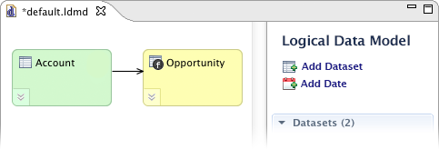
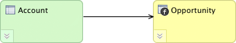

Getting started with Data Modeling
The logical data model (LDM) maps the relationship among the attributes and facts in a GoodData project. This mapping allows you to build metrics and reports, so it should be built with your reporting requirements in mind.
In GoodData, an LDM consists of the following major components:
- Attributes are qualitative characteristics of your data (e.g. Region, Zip code).
- Facts are numerical values that may be used in computation (e.g. Revenue, Cost).
- Datasets are logical groupings of attributes and facts.
- Date datasets, or date dimensions, are predefined collections of date-related attributes. Date datasets provide complex date filtering functionality without requiring additional effort.
LDMs are built using CloudConnect Designer, part of the GoodData Data Integration Service. A single logical data model may be applied to multiple GoodData projects.
Learn more about the Logical Data Model
Creating the Logical Data Model
-
1 Create an LDM diagram
To do that, go to the File → New menu

-
2 Add datasets
When nothing is selected in the model, click the Add dataset action in the Details panel on the right.

-
3 Upload the model to server
After you are done creating the model, click Publish model to server in the Details panel to publish it to server.